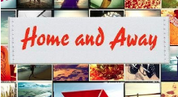

Reporter AKA Pinselschrift (brush script) Reporter: Designed by Carlow Winkow. The metal original — l
arger sizes were also available in wood — came with many extras:
alternates, swash underlines, ligatures, as well as logotypes for
common German trigraphs like ‘sch’ and even whole syllables.
